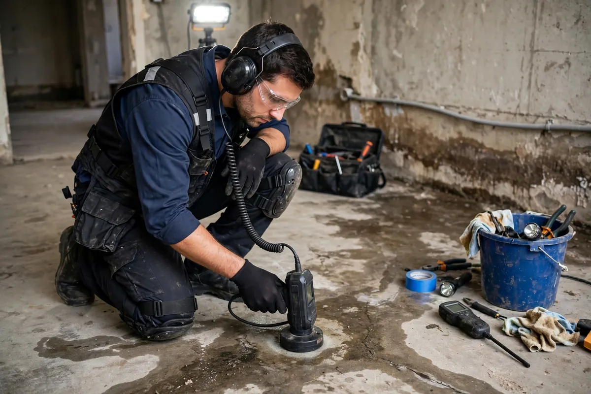

Slab Leak Cleanup in Hollywood, FL
Somewhere under your concrete slab, a pressurized water line has failed — and you may never see a drop of it. Slab leaks announce themselves sideways: a warm spot on the tile floor, the faint sound of running water when nothing is on, a water bill that suddenly doubles, or damp carpet edges along the baseboard. Slab leak cleanup addresses the interior water damage this invisible leak creates while your plumber hunts and repairs the line itself.

Understanding Slab Leak Cleanup in Hollywood
Under-slab copper lines corrode over decades, and shifting soil stresses joints until they weep or burst — all under several inches of concrete, completely out of sight. Because the line is pressurized, the leak never stops: water pushes up through cracks and joints in the slab, wicking into flooring, baseboards, and lower drywall. Hot-water line leaks add their own telltale — a patch of floor that's inexplicably warm — while cold-line leaks just quietly saturate everything above them.
The damage pattern is distinctive and slow-building. Flooring loosens or cups as moisture pushes up from below, baseboards swell at their bottoms, and musty odors develop in rooms that never had a visible spill. By the time most homeowners connect the symptoms, the leak has been running for weeks. Repairing the line is the plumber's work — rerouting overhead, tunneling, or opening the slab — while the cleanup focuses on everything the upward-migrating water damaged inside the home.
How We Handle the Job
We start from the plumber's leak location data — acoustic and thermal pinpointing is their specialty, and it tells us which rooms took the water. Surface water is extracted, then moisture readings map how far dampness traveled through flooring and up into walls; concrete holds moisture and releases it slowly, so readings matter more here than anywhere. Affected flooring is lifted where saturated, baseboards come off to expose the wall bottoms, and drying equipment runs with the slab's slow release in mind. Everything is coordinated around the plumber's repair plan so we're not drying what they'll open next week.
We'll show you the reading map so the invisible leak becomes visible on paper. When the damage extends beyond the slab zone, related work such as emergency water extraction, structural drying, or flood cleanup may be part of the same job — particularly where water migrated into adjacent rooms.
Local Response and Insurance Support
Searching for slab leak cleanup near me usually means you need help without delay. We answer emergency calls around the clock. Documentation — photos and moisture readings — supports conversations with your insurance carrier when the loss is sudden and accidental. We do not decide coverage; we provide clear technical information about the work performed.
When to Call
Call if you have active water, wet materials that are not drying, odors after a leak, or a backup that may involve contaminated water. Early action in Hollywood’s climate is almost always less disruptive than waiting. For neighborhood-specific service, see our service areas. For the full list of capabilities, visit all services.
Frequently Asked Questions
How does anyone find a leak under concrete?
Plumbers use acoustic listening equipment that hears pressurized water escaping, plus thermal imaging for hot-line leaks. The technology pinpoints the spot within a small area — no guesswork jackhammering.
Do you break open the slab to fix it?
No — accessing and repairing the line is the plumber's scope. Our work is the interior water damage: extraction, flooring, walls, and drying everything the leak affected above the slab.
Why did my water bill suddenly spike?
A pressurized slab leak runs twenty-four hours a day, and all of it goes... somewhere. An unexplained jump in usage with no visible leak is one of the most reliable slab-leak symptoms there is.
Will my flooring need to be replaced?
Where water wicked up through the slab, usually yes — flooring over a slab leak rarely survives intact. Baseboards and lower drywall sections are assessed the same way, by moisture readings, not by appearance.